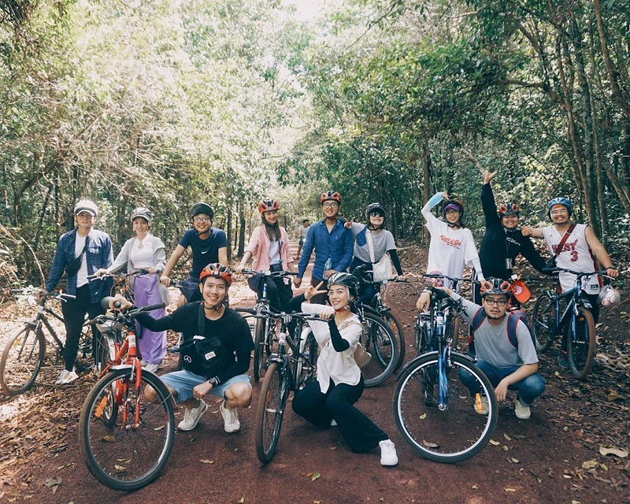

Cắm trại ở Hồ Trị An - Tại sao không?
Có rất nhiều khu cắm trại gần TPHCM để bạn chọn lựa. Tuy nhiên, cắm trại tại hồ Trị An lại là cái tên được nhiều người yêu thích nhất. Tuy chỉ là hồ nước nhân tạo nhưng nơi đây lại có sức hút rất lớn đối với những người yêu thích cảnh bình yên, vắng lặng chọn lựa. Khi tới đây cắm trại, bạn sẽ cảm thấy rất thoải mái và thư thái tinh thần.
Hồ Trị An nằm trên con sông thuộc huyện Vĩnh Cửu của tỉnh Đồng Nai. Đây là nơi để lưu trữ nước cho nhà máy thủy điện Trị An hoạt động. Chính vì vậy mà hồ Trị An còn được biết đến với các tên gọi khác như Đập Trị An, Đập thủy điện Trị An…
Khu vực hồ Trị An nằm cách trung tâm TPHCM khoảng 70km nên việc đi lại và di chuyển tới đây cũng rất thuận tiện. Rất nhiều người muốn tới khu cắm trại hồ Trị An này để nghỉ ngơi và thư giãn. Bởi không gian nơi đây rất thoáng mát và rộng rãi nên rất thích hợp để bạn có thể tổ chức chuyến đi cắm trại ngày hè của mình tại đây.
Nơi đây có hồ nước lặng yên và nước tại đây thì trong vắt và xung quanh hồ là hình ảnh những tán cây xanh mát nên khi tới đây vào ngày hè bạn cũng sẽ không cảm thấy nóng bức và khó chịu.
Chính vì vậy, nếu bạn đang lên kế hoạch cho chuyến đi cắm trại tại hồ Trị An Đồng Nai, bạn hãy rủ bạn bè, người thân của mình tới đây cắm trại, đốt lửa trại và thử cảm giác được ngủ lại tại đây một đêm để đón chờ ánh bình minh đầu tiên của ngày mới.
01. Tổ chức ăn uống cắm trại
Đi cắm trại mà không tổ chức ăn uống dã ngoại thì sẽ chẳng thể trọn vẹn đúng không nào? Chính vì vậy bạn đừng quên chuẩn bị những dụng cụ nấu ăn và các nguyên liệu khác nhé! Đừng quên, sau khi ăn uống bạn nên dọn sạch sẽ khu vực cắm trại ở xung quanh để bảo vệ môi trường.
02. Thử sức câu cá hồ Trị An
Có thể bạn không biết nhưng hồ Trị An là một địa điểm câu cá sông Đồng Nai nổi tiếng và được nhiều “cần thủ” lựa chọn ghé tới. Chính vì vậy khi đã tới khu du lịch hồ Trị An Đồng Nai này thì nhất định bạn phải thử sức câu cá nhé!
Cảm giác được lênh đềnh trên hồ nước rộng mênh mông câu cá thật thú vị biết bao. Thời điểm lý tưởng nhất để câu cá hồ Trị An chính là vào lúc sáng sớm hay khi chiều buông.
Bạn sẽ cảm thấy tinh thần thoải mái, phấn chấn hơn khi được ngồi trên thuyền câu cùng với người dân. Dường như mọi mệt mỏi, khó khăn của cuộc sống thường ngày sẽ dần tan biến hết. Ở đây chỉ có con người hòa mình vào thiên nhiên rộng lớn.
03. Tham quan rừng Mã Đà
Đà Mã là khu bảo tồn có cảnh sắc thiên nhiên vô cùng hoang sơ và nơi đây còn là nơi cư trú của rất nhiều loài động vật. Chính vì vậy, khi tới cắm trại hồ Trị An, bạn đừng bỏ lỡ cơ hội được tới khu rừng Đà Mã tham quan.
Khi đi khám phá khu rừng này, bạn sẽ được ngắm nhìn hình ảnh đàn bướm bay lượn và thi thoáng nếu may mắn sẽ bắt gặp hình ảnh con sóc tíu tít gọi nhau trong những bụi rậm. Tại khu rừng Mã Đà này có rất nhiều loại rau rừng đặc sản nên khi tới đây bạn sẽ được thưởng thức rất nhiều món ăn ngon hấp dẫn mà chỉ vùng đất này mới có như món tép um rau rừng, cá lăng nướng được đánh bắt từ hồ Trị An.
04. Khám phá đảo Chim Ó
Cảm nhận của mình khi lần đầu đặt chân tới đảo Chim Ó đó chính là không khí mát mẻ và cảnh sắc thiên nhiên dịu mát và tràn đầy sức sống. Quang cảnh nơi đây sẽ khiến bạn chỉ cần nhìn một lần đã thấy si mê. Bởi hình ảnh những hàng cây xanh mướt rợp bóng mát hay hình ảnh những tia nắng mai len lỏi luồn lách xuống khu vực đảo Chim Ó này mới đẹp làm sao?
Tới khu đảo Chim Ó này, bạn sẽ có rất nhiều địa điểm để check in và chụp ảnh làm kỉ niệm. Ngoài ra, nơi đây cũng rất thích hợp để bạn tổ chức các hoạt động tập thể hay các trò chơi cắm trại teambuilding vui nhộn bên cạnh những người thân yêu của mình.
05. Ngắm bình minh – hoàng hôn trên hồ Trị An
Khi chọn hồ Trị An làm nơi cắm trại, bạn tuyệt đối không thể bỏ lỡ việc được ngắm nhìn ánh bình minh dịu mát của ngày mới tại nơi đây. Bởi đây là cảnh tượng đẹp nhất tại hồ Trị An mà nhất định bạn không nên bỏ qua.
Khi mặt trời bắt đầu ló những tia nắng mai chào đón ngày mới, bạn hãy ngồi thuyền và ngắm nhìn các hòn đảo xinh đẹp của khu cắm trại hồ Trị An này.